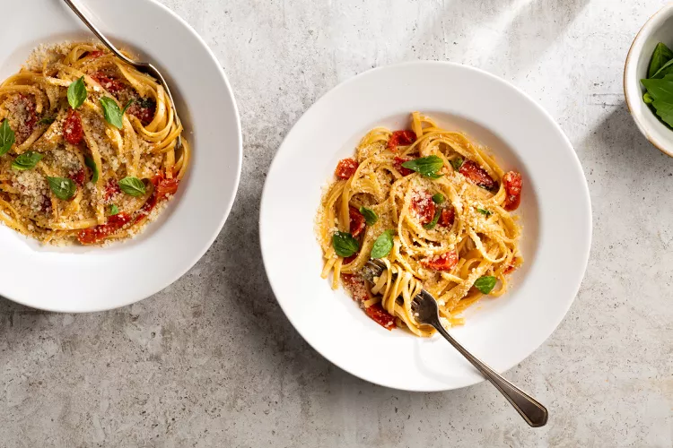

One Pan Pasta

Description
This is our original one-pot pasta recipe, inspired by a dish one of our food editors ate in Puglia, Italy. It uses a revolutionary technique: All the ingredients cook together in the same pan (a straight-sided skillet). You don’t even need to boil water first.
You can use cherry or grape tomatoes for this recipe. You’ll also need onion, garlic, fresh basil (this is not a time to use dried), plus extra-virgin olive oil. All go into the pan with the linguine.
Ingredients
- 12 ounces linguine
- 12 ounces cherry or grape tomatoes, halved or quartered if large
- 1 onion, thinly sliced (about 2 cups)
- 4 cloves garlic, thinly sliced
- ½ teaspoon red-pepper flakes
- 2 sprigs basil, plus torn leaves for garnish
- 2 tablespoons extra-virgin olive oil, plus more for serving
- Coarse salt and freshly ground pepper
- 4 ½ cups water
- Freshly grated Parmesan cheese, for serving
Steps
- Combine ingredients in pan and bring to a boil: Combine pasta, tomatoes, onion, garlic, red-pepper flakes, basil, oil, 2 teaspoons salt, 1/4 teaspoon pepper, and water in a large straight-sided skillet. Bring to a boil over high heat.
- Cook, stirring: Boil mixture, stirring and turning pasta frequently with tongs, until pasta is al dente and water has nearly evaporated, about 9 minutes.
- Season and serve: Season to taste with salt and pepper, divide among 4 bowls, and garnish with basil. Serve with oil and Parmesan.